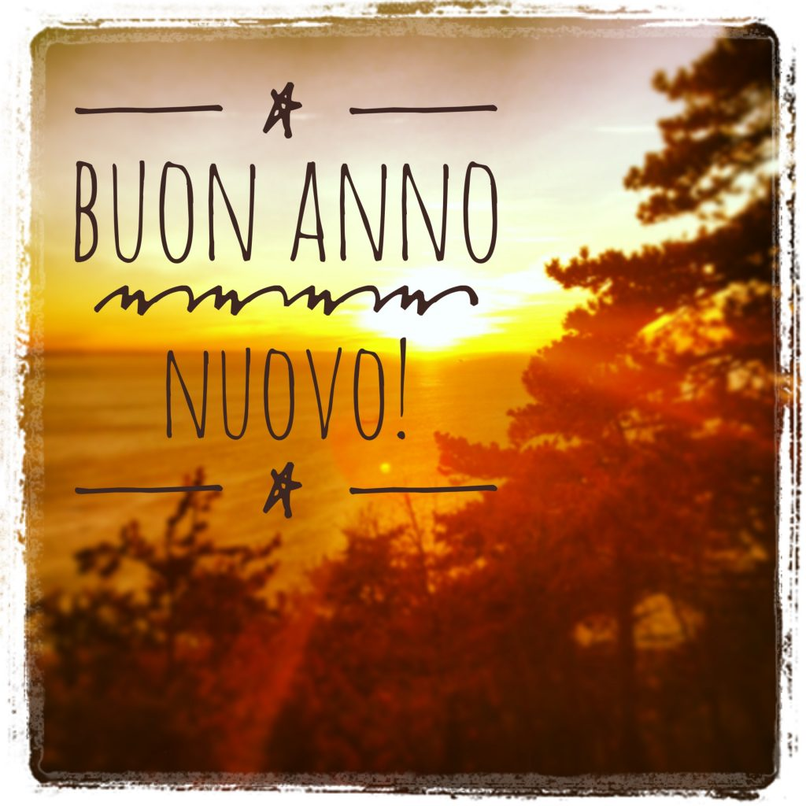

We are wishing our readers a Happy 2019, filled with joy, love, health, prosperity, success and... pizza, Nutella, spaghetti all'amatriciana, tiramisù, Parmigiano Reggiano, gelato, limoncello, bistecca alla fiorentina, and tortellini. But I'm sure I missed something... feel free to add it in the comments below!